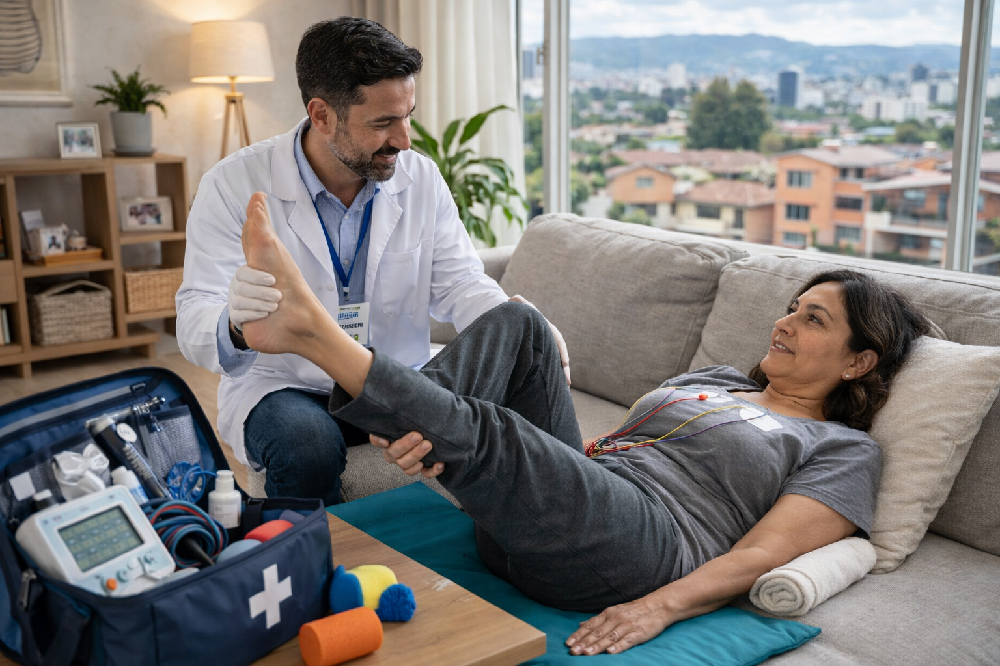
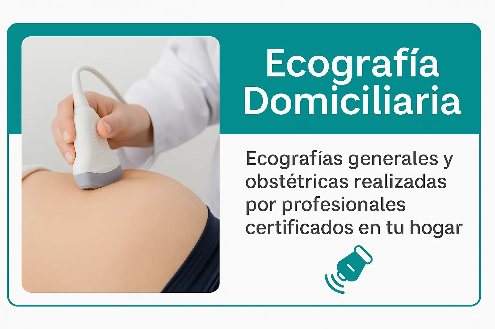

Brindamos servicio médico domiciliario en Bogotá con atención profesional y humana. Ofrecemos consulta médica a domicilio, laboratorio clínico, electrocardiograma, ecografías y terapias en casa, sin que tengas que desplazarte.

Atención de médico a domicilio en Bogotá para valoración clínica, diagnóstico y tratamiento en la comodidad de tu hogar.
Agenda por WhatsAppToma de muestras de laboratorio en casa con resultados confiables y personal capacitado en Bogotá.
Solicita tu examenRealizamos electrocardiogramas en casa con equipos portátiles y lectura médica profesional.
Agenda tu electro
Terapia respiratoria, fisioterapia y rehabilitación en casa, adaptadas a cada paciente.
Agenda tu terapia
Ecografías en casa con equipos portátiles de alta resolución y personal especializado.
Solicita tu ecografíaOfrecemos consulta médica domiciliaria en Bogotá para adultos, niños y adultos mayores. Nuestro servicio médico domiciliario está disponible las 24 horas para atención médica general, control de enfermedades y valoración clínica en casa. Contamos con médico a domicilio en Bogotá, atención rápida, segura y profesional, sin necesidad de desplazamientos.
Consulta médica a domicilio, urgencias médicas, toma de laboratorio, electrocardiograma y ecografía en casa con profesionales certificados.

Atención médica a domicilio en Bogotá las 24 horas, todos los días.

Profesionales de la salud certificados para consulta médica domiciliaria.

Respuesta rápida para consultas y urgencias médicas en casa.

Tarifas claras y accesibles en nuestro servicio médico domiciliario.
💉 Somos un equipo de médicos y profesionales de la salud en Bogotá, especializados en consulta médica domiciliaria y atención médica a domicilio, llevando salud de calidad directamente hasta tu hogar.
🏠 Nuestro servicio médico domiciliario en Bogotá está diseñado para evitar desplazamientos innecesarios, ofreciendo atención humana, oportuna y segura para pacientes de todas las edades.
 Escríbenos por WhatsApp
Escríbenos por WhatsApp
Años de experiencia en servicio médico domiciliario
Pacientes atendidos con consulta médica a domicilio
Atención médica domiciliaria en Bogotá
Aprende a identificar síntomas y cuándo es recomendable atención médica en casa.
Leer másUn control médico oportuno sin salir de casa puede prevenir complicaciones.
Leer másRecomendaciones médicas para cuidar tu salud desde casa.
Leer másSí. Nuestro servicio médico domiciliario en Bogotá está disponible 24/7 para atender consultas médicas a domicilio y situaciones que requieren valoración médica inmediata en casa.
El tiempo estimado de llegada de nuestro médico a domicilio en Bogotá es de aproximadamente 30 a 45 minutos, dependiendo de la zona y disponibilidad.
Sí. Ofrecemos toma de laboratorio a domicilio, electrocardiogramas y ecografías en casa como parte de nuestro servicio médico domiciliario.
Ofrecemos servicio médico a domicilio en todas las localidades de Bogotá, incluyendo Usaquén, Chapinero, Suba, Engativá, Kennedy, Fontibón, Bosa, y más. Atención de medicina general, terapias respiratorias y urgencias 24/7.
Mapa mostrando la cobertura de Su Médico en Casa en todas las localidades de Bogotá